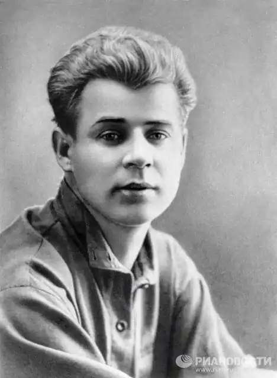
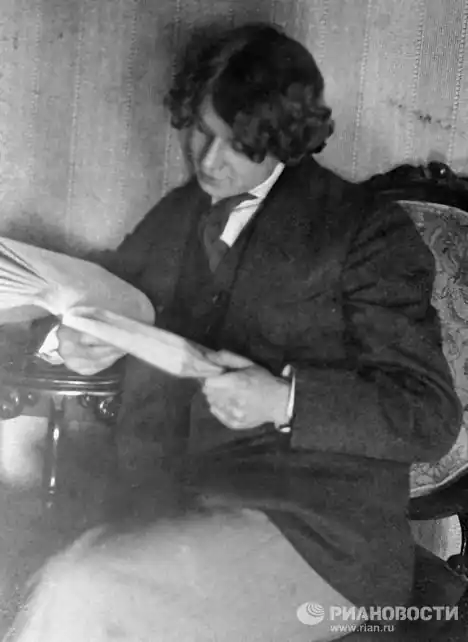

ЄСЕНІН, Сергій Олександрович (Есенин, Сергей Александрович — 21.09.1895 с. Константинове Рязанської губернії — 28.12.1925, Ленінград) — російський поет.У різних варіантах біографії Єсенін по-різному інтерпретував багато фактів свого життя, але на запитання, коли вперше відчув "пробудження творчих дум", відповідав однаково: "До 8 років". Ці дитячі спроби не збереглись, та можна припустити, що дві ліричні мініатюри, які поет згадав у 1925 р. при підготовці "Зібрання віршів: В 4 т." (Москва — Ленінград, 1926—1927) — "От вже вечір. Роса..." і "Там, де грядки капусти..." — написані ще в дошкільному віці. Записувати свої поезії Єсенін почав в учительській школі села Спас-Клепіки, яку закінчив у 1912 р. з дипломом викладача початкових класів. У тому ж році поет переїхав на проживання у Москву. Змінивши кілька професій (конторник у м'ясній крамниці, експедитор у книжковому видавництві "Культура", помічник коректора у друкарні І.Д. Ситіна), записався вільним слухачем у Народний університет ім. А. Шанявського на історико-філософське відділення (1913), став членом Суриковського літературно-музичного гуртка, що об'єднував і опікувався вихідцями з села, брав участь у створенні журналу "суриковців" "Друг народу" ("Друг народа"), там же опублікував вірш "Візерунки". Публікувався у московському журналі для дітей "Світок"(1914; вірші "Береза", "Пороша", "Село", "Пасхальний благовіст", "Доброго ранку!", "Сирітка") та ін.
Хоча в деяких віршах Єсеніна зустрічаються "свіжі" рядки і строфи, та загалом вони мало чим відрізняються від творів його колег по Суриковському гуртку і від спроб поетів-самоучок. Єсенін це розумів, але не впадав у відчай, він впевнений: у нього велике майбутнє. Потай від друзів і близьких він створив серію віршів для своєї першої книги ("Радуниця") і пристрасно мріяв "будь за що втекти у Пітер". Зустріч з Ганною Ізрядновою, котра стала його громадянською дружиною, народження сина Юрія, університетські лекції й університетські знайомства відволікли від думок про втечу в північну столицю, проте ненадовго; на початку 1915 він зізнається товаришу, що збирається назовсім переїхати в Петроград, мовляв, "піду до Блока. Він мене зрозуміє".
О. Блок прийняв Єсеніна ввічливо, візит відмітив двічі: у записнику і на залишеній Єсеніним записці: "Вдень у мене рязанський хлопець з віршами"; "Вірші свіжі, чисті, голосисті..." (9 березня 1915); передбаченого Світлого Гостя в авторі голосистих віршів не впізнав, але деяку участь в його долі все ж взяв: переадресував рязанського хлопця з позитивною рекомендацією до С. Городецького. Причину такої стриманості Блок пояснив у листі від 22 квітня: "Мені навіть думати про Вас важко, такі ми з вами різні". Зате Городецький, теж поет і трохи художник, котрий захоплювався панславізмом і російським селянським мистецтвом, прийняв Єсеніна захоплено — як давно очікуване диво: поєднання панславістських мрій з голосом, породженим селом, уявлялося йому "святом якогось нового народництва". На нове народництво у столиці був попит. Промисловий бум кінця століття, що вивів Росію у світові держави, загострив давню ворожнечу західників і слов'янофілів, при цьому слов'янофільським центром став Петербург; Москва рішуче повернулася до Європи. У цих досить специфічних обставинах Єсенін, розгледівши в рязанському селі ідеальний прообраз самобутньої Росії — Блакитну Русь — був приречений на успіх, так само як і М. Клюев, першовідкривач і хоронитель заповідних скарбів північної старовини. Навесні "олонецького співця", як називав себе Клюев, у Петрограді не було; за порадою Городецького, Єсенін написав йому; Клюев відгукнувся, і від осені того ж року "народний златоуст" (роль Клюева) і "народний злотоцвіт" (амплуа Єсеніна) на всіх народницьких вечорах виступали нерозлучною парою. У дивних їхніх стосунках було багато важкого: ревнощів, взаємних образ, суперництва. Та поміж тим, можливо, саме до Клюева звернене передсмертне послання Єсеніна ("До свиданья, друг мой, до свиданья..."). Не без допомоги Клюева Єсеніну вдалося уникнути відправлення в діючу армію: його влаштували санітаром у Царскосельський лазарет; він же допоміг знайти видавця для "Радуниці", і 1 лютого 1916 р. збірка вийшла друком. Єсенін дуже вдало назвав першу свою книгу. По-перше, точно означив її емоційну домінанту: радуниця — радість ("А нам радість, а нам сміх") і радуниця — привітність (готовність робити добро з радістю, від душі); по-друге, зробивши вже перший свій "словесний крок", заявив, що він не лише один із представників новоселянської поезії, а й "суворий майстер" ("Я прийшов, як суворий майстер..." — "Сповідь хулігана"), причетний до секретів фольклорної свідомості і підсвідомості. "Радуниця" і вірші 1916 р. зробили Єсеніна модним поетом: про нього говорили, йому лестили, його повчали. А Єсенін уже тоді зрозумів: на петербурзькому Парнасі він чужий, тому й тримався насторожено, болісно реагуючи на "поблажливість дворянства"; цього він не вибачав нікому, навіть Блоку. 23 лютого 1917 Єсеніна відправили в Могильов у розпорядження командира бойового піхотного полку. Через кілька днів відбувся переворот, і у березні рядовий Є. повернувся у Петроград, отримавши призначення у школу прапорщиків, але за призначенням не з'явився. Незважаючи на іронічне ставлення до О. Керенського ("каліфа на білому коні"), Єсенін сприйняв Лютневий переворот як віщий знак оновлення, повірив, що тепер Росія стане Великою Селянською республікою, а він, Єсенін, її співцем і пророком. У щасливому передчутті світлого майбутнього він змінив і стиль особистого життя: не личить першому поетові Нової Росії бути "бродягою" — 30 липня 1917 він одружився (вінчався у церкві) із З. Райх, вродливою енергійною дівчиною із трудової провінційної сім'ї, винайняв пристойне житло, радів із народження доньки, яку назвав на честь своєї матері Тетяною. Із ще більшим захопленням Єсенін зустрів Жовтневу революцію. Він і Петроград покинув, переїхавши у Москву, не за сімейними обставинами, а "разом з радянською владою" (навесні 1918). І хоча членом ВКП(б) Єсенін так і не став, але не лукавив, пишучи у біографії: "У роки революції був на боці Жовтня, але розумів усе по-своєму, із селянським ухилом". Важливе уточнення: окрилений більшовицьким декретом про землю, поет навіть зовні змінився. Ось яким бачив його в 1918 р. В'яч. Полянський, літературний критик і головний редактор журналу "Новий світ" ("Новый мир"): "Йому було тісно і незручно, він був сповнений пісенної сили і творчої невгамовності. З нього спадали якісь пута... з нього джерелом била мужицька стихія, розбійницьке молодецтво... з безумним поглядом, у безпам'ятстві захоплення він декламував свою чудову "Інонію". "Інонія" — центральна частина книги з 10 маленьких поем (1917—1919). За встановленою традицією, ці поеми називають "біблійними". Спровокував критиків на вживання незвичного терміну сам Єсенін, поставши в "Інонії" в образі пророка: "Так говорить по Біблії / Пророк Єсенін Сергій". Біблія, яку "тлумачить" поет, не строго православна, а єретична, мужицька. Але створюючи нові релігійні форми, Єсенін використовує і канонічно-християнські уявлення, сюжети, символи. Поетична "Біблія" Єсеніна — твір зухвало-новаторський, але занадто вигадливий для "простого, як мукання" часу, де, за словами В. Маяковського, "зникали всі середини", — читацького успіху не мала. Та й критики поставилися до біблійного циклу більш ніж стримано. І все ж особлива точка зору Полянського не залишалася без підтримки. Г. Іванов теж вважав, що цикл "Інонія"як вірші — найдосконаліше зі створеного Єсеніним, а як документ — яскраве свідчення щирості його революційного захоплення. Так, Єсенін стверджує, що він "з усіма устоями" стоїть на "радянській платформі" ("Автобіографія", 1923) і творить разом з пролетарським поетом М. Герасимовим і С. Кличковим "Кантату" — реквієм за загиблими героями Жовтня. Але у прорадянські роки (1917—1918) сприймав усе вже не лише із "селянським ухилом", а й рішуче по-своєму. Особливо обурювала Єсеніна культурна політика нової влади і, перш за все, класовий підхід до явищ естетичного порядку. Ось яку єретичну думку висловив він уже в 1918 р. (у "Ключах Марії ): "Те, що постає перед нашими очима в будівництві пролетарської культури, ми називаємо: "Хай випускає крука". Ми знаємо, що крила крука важкі, шлях його недалекий, він упаде, не тільки не долетівши до материка, а й навіть не побачивши його, ми знаємо, що він не повернеться, знаємо, що оливкову гілку принесе тільки голуб — образ, крила якого спаяні вірою людини не від класової свідомості, а від усвідомлення її храму вічності". Попри це до осені 1919 p., тобто до виходу друком поеми "Кобилячі кораблі", гострих конфліктів з ленінським режимом у Єсеніна не було. У цій збірці символ революції — "кіннота бур" перетворюється на "хугу", що несе голод і смерть; богоподібне сонце замерзає, а сам поет, колишній пророк Блакитної Росії, тепер відкинутий на узбіччя життя. Відносна лояльність Єсеніна протягом двох перших пореволюційних років пояснюється, напевно, ще й тим, що після переїзду у Москву йому стало не до політики. Розпещений опікою пітерських літераторів, він розгубився у Москві: як виявилося, ніхто добре його не знав, тут ще потрібно було доводити, що він "відомий російський поет". Ось тут доля і познайомила його з А. Марієнгофом і В. Шершеневичем, літераторами-імажистами. У побутовому плані це було вигідно: імажисти рекламували Єсеніна, він читав свої вірші у літературному кафе "Стійло Парнасу", вперше в житті у нього з'явилася потрібна аудиторія, яка могла співпереживати. За враженнями "стійло-пегасних" років написана найпопулярніша його книга "Москва кабацька" (1924). Але незабаром між імажистами та Єсеніним виникли суперечки як ідейного, так і особистого характеру. У березні 1920 р. Єсенін вирушив у Харків з метою видання колективної збірки групи "Харчевня зірок" ("Харчевня зорь"), у яку Єсенін планував помістити "Кобилячі кораблі". У Харкові Єсенін на свої очі побачив усі жахіття кривавої радянської влади, селянську війну на чолі з Н. Махном, чекістські "чистки". Повернувшись у Москву, Єсенін створив 2-й варіант "Кобилячих кораблів", де Жовтень, з яким він пов'язував стільки надій, називає "злим".